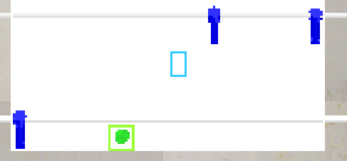

問題:
第十三週-影像辨識機器對打
如果球打到桿子後方會無法回擊
解決方法:
更改判斷球位置的方式如第十四週內容
問題:
無法判別多根桿子

原因:
程式會尋找所有藍色物件的質心
解決方法:
更改尋找物件方式
由原本的找尋藍色物件改成尋找藍色物件的輪廓
問題:
由於尋找物件輪廓順序是隨機的
所以無法直接給予相對應物件座標位置
解決方法:
新增以下判斷式來設定各物件位置變數
# 只取奇數項
ret_blue_odd = ret_blue[::2]
for i in range(len(ret_blue_odd)):
if ret_blue_odd[i][1] >=13 and ret_blue_odd[i][1] <=20:
blue00 = (ret_blue_odd[i][0], ret_blue_odd[i][1])
elif ret_blue_odd[i][1] >= 57 and ret_blue_odd[i][1] <=64:
if ret_blue_odd[i][0] < ret_blue_odd[i+1][0]:
blue01 = (ret_blue_odd[i][0], ret_blue_odd[i][1])
elif ret_blue[i][0] >= ret_blue[i+1][0]:
blue02 = (ret_blue_odd[i][0], ret_blue_odd[i][1])
# blue00 is first rod object position
# blue01 is second rod and left object position
# blue02 is second rod and right object position